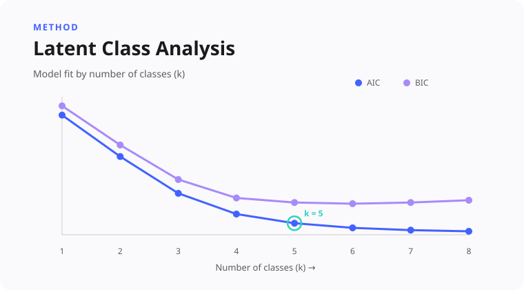
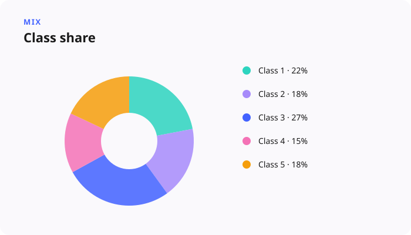

Segmentation with LCA
5-class solution chosen over 3–9 options
Latent class analysis across up to 155k CSAT responses, landing on seven interpretable audience classes and compared head-to-head against simpler attitudinal quadrants.

Situation
Intercept survey volume was a gift and a trap. Across rating tips, feature feedback, and ad-hoc evaluations, we were analyzing hundreds of thousands — sometimes over a million — responses. A single average score looked definitive while hiding almost everything that mattered. Demographic cuts and simple attitudinal quadrants each explained a slice of reality, but we still lacked a clear, nuanced understanding of our audiences beyond simple extremes (highly engaged vs. disengaged, happy vs. unhappy). Because the product is complex and versatile, used across diverse roles where segments frequently intersect and overlap, traditional single-metric splits were insufficient. Latent Class Analysis was selected to unify multiple data streams — attitudinal signals, firmographic data, and behavioral usage — into comprehensive, actionable audience profiles.
Task
Discover latent audience classes from large intercept survey datasets, profile those classes until they were actionable, prove the separation was real, and evaluate LCA alongside simpler quadrant models so stakeholders could choose the right tool for their needs.
Approach
Latent class analysis ran across broad intercept survey collections, analyzing tens to hundreds of thousands of responses. Model selection evaluated solutions ranging from 3 to 9 classes using information criteria (AIC/BIC) to assess parsimony and entropy to ensure classification clarity, alongside qualitative interpretability. A 5-class solution was ultimately selected as the best balance of statistical robustness and actionable insight, with each class profiled on score distribution, enterprise mix, functional composition, activity intensity, region, and qualitative comment themes until the profiles were concrete enough for product and design teams to act on.
Validation used ANOVA to measure effect sizes alongside chi-square tests on key covariates like tenure, user role, and usage intensity. In parallel, a multi-pillar audience model combined attitudinal, firmographic, and behavioral signals, with trade-offs explicitly documented: where LCA and quadrants aligned, where they diverged, and when each method was most appropriate.

Result
Relying solely on overall average satisfaction scores stopped being the standard. Well-defined segment profiles gave teams concrete user archetypes to design for and target, and statistical validation confirmed robust class separation across datasets. The lasting impact was strategic: LCA became the primary discovery tool across product lines, while simplified quadrant frameworks served as the ongoing operational model — reducing tool confusion and streamlining research workflows.

Methodology
This project demonstrates advanced segmentation methodology and psychometrics-adjacent modeling: model selection, class profiling, and rigorous dataset analysis across solutions ranging from 3 to 9 classes, using information criteria and entropy alongside qualitative interpretability. Statistical validation focused on meaningful effect sizes and covariate relationships, while methodological evaluation highlighted key trade-offs between segmentation approaches — synthesizing behavioral and attitudinal signals while maintaining causal rigor.
Skills demonstrated: Construct validity & psychometrics, Segmentation (LCA, clustering), Regression & effect sizes, Survey design